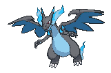

O que estudo
Backend Python, desenvolvimento web com React e PWA, bancos de dados PostgreSQL e SQL, automação de processos e inteligência artificial aplicada.
POKÉDEX DEV · ADS 2026
Olá! Eu sou
Capturando bugs e automatizando processos.
Estudante de Análise e Desenvolvimento de Sistemas em João Pessoa, Brasil. Crio sistemas completos de ponta a ponta: Backend Python, interfaces React PWA, PostgreSQL, automações com n8n e IA aplicada.

Ficha do treinador
Backend Python, desenvolvimento web com React e PWA, bancos de dados PostgreSQL e SQL, automação de processos e inteligência artificial aplicada.
Sistemas completos ponta a ponta: da modelagem do banco e das regras de negócio em APIs REST até interfaces responsivas, fluxos automatizados e arquiteturas multiagente.
Pokédex de projetos
Escolha um projeto na lista para ver o que ele resolve, como foi desenhado e quais tecnologias usa.
Privado · Em produção
Sistema digital completo para a gestão de estúdios de Pilates. Ele reúne em um só lugar o que a recepção e as instrutoras precisam no dia a dia.
Projeto privado: o código e o ambiente não são públicos. Posso apresentar o funcionamento em uma conversa.
Open source · MIT
Arquitetura operacional multiagente para engenheiros de software e IA, baseada em verificação cruzada entre famílias de modelos em vez de um único prompt gigante.
Selecione ao menos duas famílias distintas.
Move Set
Filtre por tipo para ver o que uso em cada parte de um sistema.
Vamos conversar